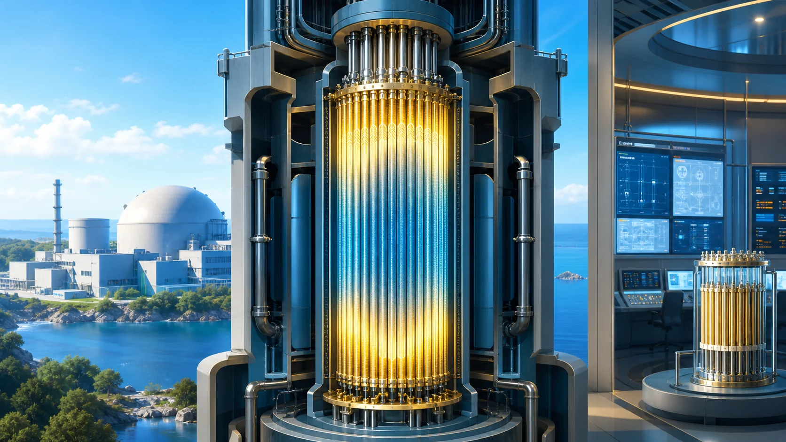
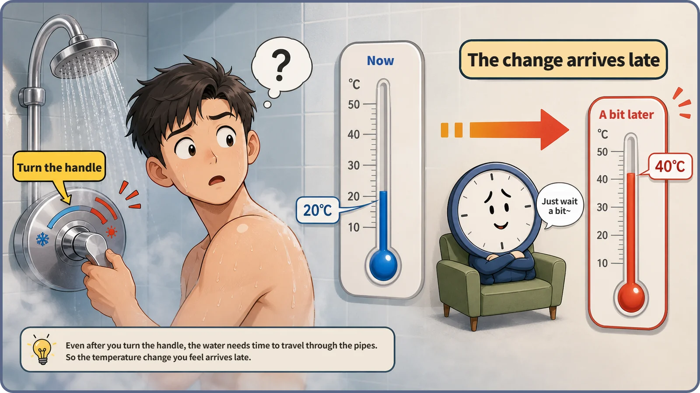
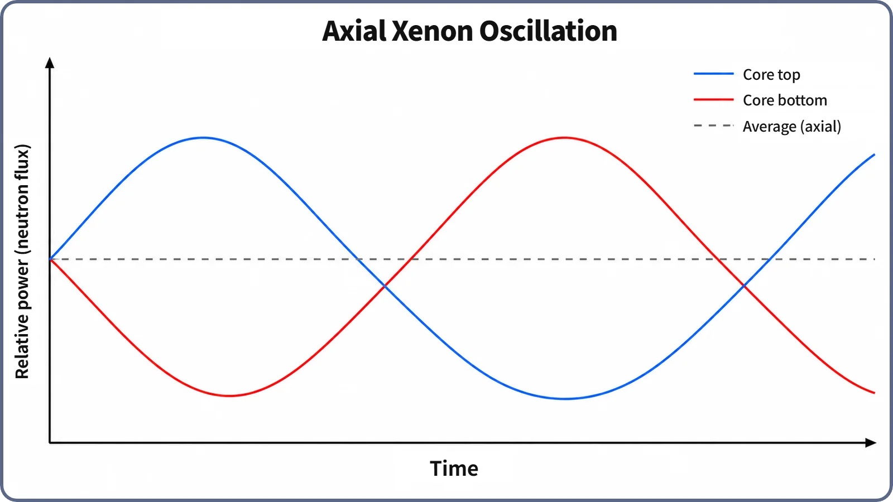

Reactor Kinetics & Reactivity · 123
Why the Shower Keeps Swinging Hot and Cold — and Why Xenon Oscillations Happen in a Reactor
A correction that always arrives hours late, in a core too big to mix quickly, makes power trade places between the top and bottom of the core. Nothing shakes; only the numbers move.

Iodine-135 takes hours to turn into neutron-absorbing xenon-135, so in a large reactor core the correction to a local power rise always arrives "late and too strong." In cores too big for neutrons to mix quickly, power keeps trading places between the top and bottom, typically over 15–30 hours. Nothing shakes; it is predictable behavior that plants monitor and control.
The shower that won't settle
You have almost certainly been here. The shower feels cold, so you nudge the handle toward hot. A few seconds pass and the water is still lukewarm, so you turn it a little more. Then, suddenly, it scalds. You yank it back, and after another long pause it goes icy. Only after a few rounds do you land on the right temperature, all because the effect of turning the handle shows up seconds late. A large reactor core has a phenomenon built on the same principle, in which power rises and falls on its own, again and again: xenon oscillation.
A late-responding handle makes you swing back and forth
Hot water physically needs a few seconds to travel up the pipe to the shower head. We can't wait, decide "still not hot," and keep turning. When the water from a few seconds ago arrives, the extra turn is already on its way too, so it feels far hotter than expected. Crank it back, and the same delay plays out in reverse.
Nothing is broken; handle and pipes both work normally. There is just a time lag between cause (turning the handle) and effect (the temperature changing), and deciding while ignoring that lag creates the swinging pattern itself. That is the key ingredient: delayed feedback pushes a system into rising and falling instead of settling smoothly.

When one part of the core heats up, what happens hours later
A reactor core has a delay with the same structure. Xenon-135 absorbs neutrons extremely well, and it is constantly produced as iodine-135, already accumulated in the core, decays. But iodine-135 takes hours to become xenon-135: its half-life is about 6.6 hours. Those hours play the role of the shower's pipe.
Suppose one region of the core, say the top half, runs at slightly higher power. With a stronger neutron flux there, xenon-135 is burned off faster (it absorbs a neutron and turns into something else). Less xenon means fewer neutrons stolen, so that region's power climbs further for a while, like another turn of the handle. But higher power also produced more iodine-135. When that iodine decays into xenon hours later, the late-arriving xenon pushes the region's power down hard, just like the scalding water that arrives seconds late.
The control system keeps total reactor power roughly constant, so as the top is pushed down, the bottom rises by comparison. Now the bottom runs the same cycle: power up, xenon burned off, power up further, pushed down hours later by accumulated xenon, and back to the top. Because this swap keeps repeating instead of ending after one round, it is called a xenon oscillation, not just a xenon transient.
Why "spatial"? What happens when a core is large
Why does this show up at different locations inside the core rather than for the core as a whole? The answer is core size and how strongly its regions are coupled.
In a small core, or one where neutrons move freely and mix well, a change in one region quickly spreads through neutron diffusion and averages out, like a tiny bathroom where the temperature is the same everywhere. Local swaps have no room to grow; such a core is called xenon-stable.
In a large core, much larger than the distance neutrons travel as they mix, distant regions are relatively weakly coupled, like the two ends of a big public bath. A local change cannot spread fast enough and stays put, so the delayed-feedback cycle can grow at one location. The exact boundary, such as a critical core size or a specific stability index, depends on core design and fuel loading pattern. The best-known form is the axial oscillation between top and bottom; depending on the design, side-to-side (radial) oscillations can also appear.
The period is generally said to be in the 15–30 hour range, the same order of magnitude as the iodine-135 (about 6.6 hours) and xenon-135 (about 9.2 hours) half-lives; the exact value varies with core size, fuel arrangement and power level.
| Quantity | Typical value | Role |
|---|---|---|
| Iodine-135 half-life | about 6.6 hours | Sets the delay before new xenon appears |
| Xenon-135 half-life | about 9.2 hours | Sets how long accumulated xenon lingers |
| Oscillation period | roughly 15–30 hours | Varies with core size, fuel arrangement and power level |

Put two thermometers in the tub
With one thermometer in a bathtub, you only know the average. Put one near the top and one near the bottom, and you might see the average barely move while top and bottom trade hot and cold over time.
Reactor calculations face the same problem. The simplest method, the point kinetics model, describes the whole core with one value (total power), like a tub with one thermometer, so it cannot show the internal power distribution trading places. Predicting spatial xenon oscillations requires dividing the core into many regions and calculating each region's neutron flux and xenon concentration together: a space-dependent kinetics calculation. That is why this is a favorite example in reactor kinetics: the core-wide number looks steady while the numbers inside rise and fall on their own.
Nothing shakes; the numbers just trade places
"Oscillation" makes it easy to imagine the core or fuel shaking. Nothing moves at all. The only thing that changes is the power (neutron flux) level in each region, a numerical flow trading places.
Nor does it mean the core is faulty. In large cores with relatively weak neutron coupling it is natural, predicted behavior. Depending on the core, an oscillation may damp out over time or, if left alone, grow. Large reactors continuously monitor the axial power distribution and make small control rod adjustments to suppress oscillations early (axial power distribution control), like a smart thermostat that allows for the delay instead of reacting only to "it's cold now."
Why it matters
In operation, the axial (and if needed side-to-side) power distribution of large cores is monitored continuously, and control rods step in at the first sign of oscillation. In design, core size, fuel loading pattern and the other negative feedbacks (Doppler feedback, the moderator temperature coefficient and so on) are calculated together so that any oscillation either dies out or can be held down by active control. The oscillation itself is not a hazard; calculating, monitoring and controlling it is a basic condition for running a reactor safely and as planned.
Key takeaways
- A region's power change shows up in its xenon concentration only hours later, so the correction always arrives "late and too strong," and power in the top and bottom (or two sides) keeps trading places.
- It is spatial because a large, weakly coupled core cannot quickly spread a local swap to other regions.
- The period is generally said to be 15–30 hours; it may die out or grow depending on the core.
- It is not physical shaking, and it is predictable, normal behavior, not a defect.
- Single-value calculations cannot capture it; space-dependent calculations, monitoring and control keep it within limits.